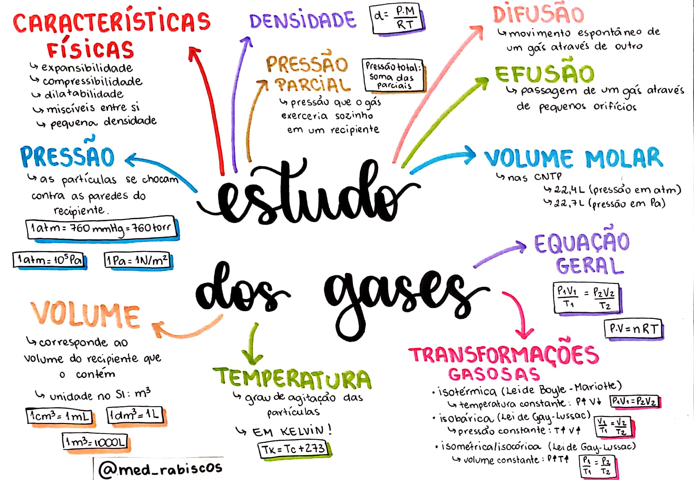
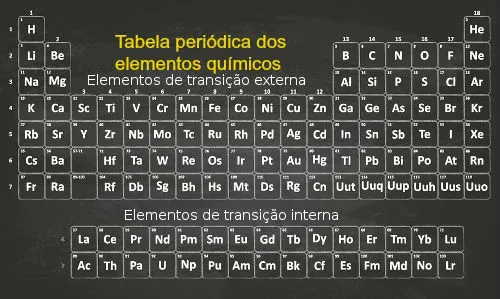

Técnicas de Estudo
- Técnica Pomodoro
- Mapas Mentais
- Testes práticos
- Estudo Mnemônico
- Uso de áudios e vídeos
- Flashcards
A Técnica Pomodoro consiste em você fracionar um intervalo de tempo de estudo de, por exemplo, 2 horas em intervalos repetitivos de 25 e 5 minutos alternadamente, onde nos primeiros 25 minutos você permanece focado, estuda, enquanto nos próximos 5 minutos, você descansa.
As vantagens dessa técnica são muitas, como, por exemplo: aliva ansiedade; aumenta o foco e a concentração porque você diminuiu o tempo de interrupções e distrações; melhora o processo de trabalho ou estudo; etc
Uma técnica muito simples e que consiste em desenhar um mapa ou esquema visual com as principais ideias do conteúdo que se procura ou está a aprender

É simplesmente reforçar o que aprendeu através da realização prática de exercícios. Nunca subestime o poder da repetição! Consistência é tão importante quanto intensidade!!
Esse método utiliza-se da criação de frases, rimas ou músicas que facilitam o processo de memorização.

Exemplos:
Família dos metais alcalinos - Família 1A (Exceto Hidrogênio): Li Na Kama Robinson Crusoé Francês
--- em referência a: Lítio (L), Sódio (Na), Potássio (K), Rubídio (Rb), Césio (Cs) e Frâncio (Fr)
Família dos halogênios - Família 7A: Foi Claro que a Bhrama Interferiu na Antártica
--- em referência a: Flúor (F), Cloro (Cl), Bromo (Br), Iodo (I) e Astato (At)
Utilize o celular para gravar áudios e ouví-los em momentos aleatórios durante o dia. Explore também o aprendizado por vídeo. Não se esqueça que quanto mais estimular seus sentidos (visuais, auditivos e cinestésicos) maiores serão as chances em absorver novos conteúdos
Não poderíamos deixar de falar do nosso carro chefe...
Flashcards são cartões criados pelos estudantes, com uma pergunta escrita na parte da frente e a resposta, escrita na parte de trás.
Os cartões devem ser embaralhados e sorteados um a um. Acertou a resposta? Sinal que você está assimilando o conteúdo que está estudando. Errou? Sinal que ainda precisa praticar mais